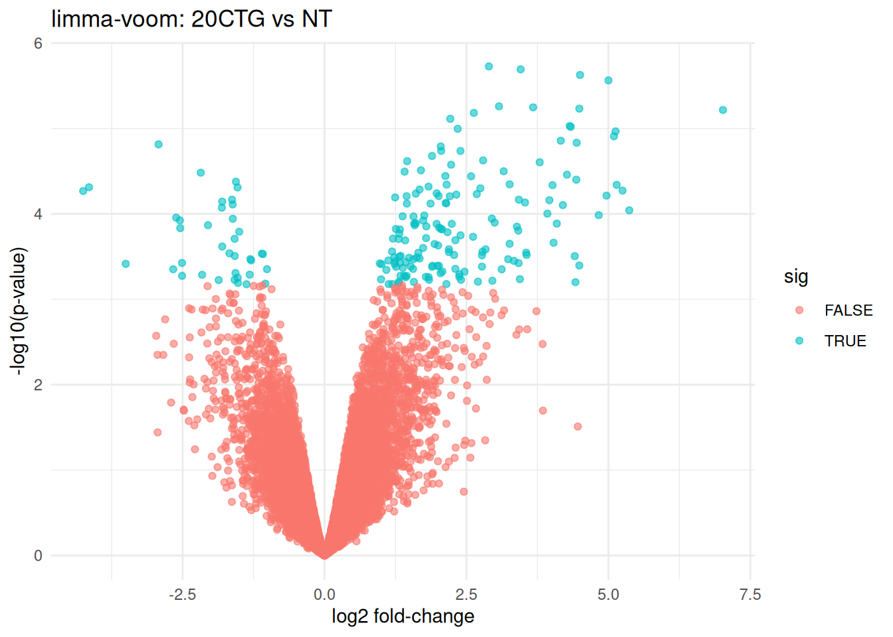

Chapter 4 Differential expression with limma-voom
In this chapter we run limma-voom, which:
- Starts from raw counts
- Transforms to log2-CPM with precision weights (
voom()) - Fits a linear model + empirical Bayes moderation
We use an additive model:
\[ \text{expression} \sim \text{cellline} + \text{treatment} \]
This estimates treatment effects while controlling for baseline differences between cell lines.
obj <- readRDS("data/d1_qc_objects.rds")
dge_f <- obj$dge_f
meta <- obj$meta
mappings <- obj$mappings
design <- obj$design
v <- limma::voom(dge_f, design, plot = TRUE)
fit <- limma::lmFit(v, design)
fit <- limma::eBayes(fit, trend = TRUE)
# Contrasts
contr <- limma::makeContrasts(
`3CTG_vs_NT` = treatment3CTG - treatmentNT,
`20CTG_vs_NT` = treatment20CTG - treatmentNT,
`20CTG_vs_3CTG` = treatment20CTG - treatment3CTG,
levels = design
)
fit2 <- limma::contrasts.fit(fit, contr)
fit2 <- limma::eBayes(fit2, trend = TRUE)4.1 Results tables
res_3_vs_nt <- limma::topTable(fit2, coef = "3CTG_vs_NT", number = Inf, sort.by = "P")
res_20_vs_nt <- limma::topTable(fit2, coef = "20CTG_vs_NT", number = Inf, sort.by = "P")
res_20_vs_3 <- limma::topTable(fit2, coef = "20CTG_vs_3CTG", number = Inf, sort.by = "P")
head(res_20_vs_nt)## logFC AveExpr t P.Value adj.P.Val B
## ENSG00000106785 2.894374 5.240704 11.266490 1.873824e-06 0.01003629 5.647001
## ENSG00000142627 3.454754 3.004435 11.155273 2.031112e-06 0.01003629 5.208978
## ENSG00000187608 4.500617 7.640307 10.951816 2.358174e-06 0.01003629 5.464044
## ENSG00000130303 5.000484 3.008775 10.755364 2.730221e-06 0.01003629 4.811748
## ENSG00000184979 3.072986 4.117137 9.857263 5.502788e-06 0.01072873 4.582496
## ENSG00000173535 3.674226 2.015635 9.825163 5.648037e-06 0.01072873 4.0657394.2 Volcano plot (20CTG vs NT)
volcano_df <- res_20_vs_nt %>%
rownames_to_column("ensembl") %>%
mutate(sig = adj.P.Val < 0.05)
ggplot(volcano_df, aes(x = logFC, y = -log10(P.Value), color = sig)) +
geom_point(alpha = 0.6) +
theme_minimal() +
labs(
title = "limma-voom: 20CTG vs NT",
x = "log2 fold-change",
y = "-log10(p-value)"
)